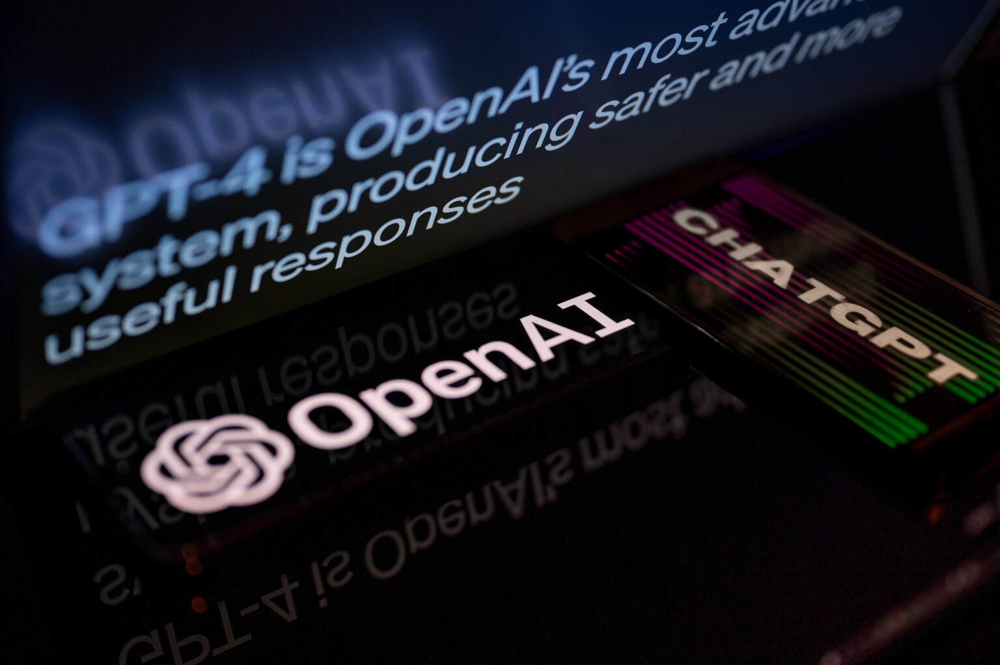
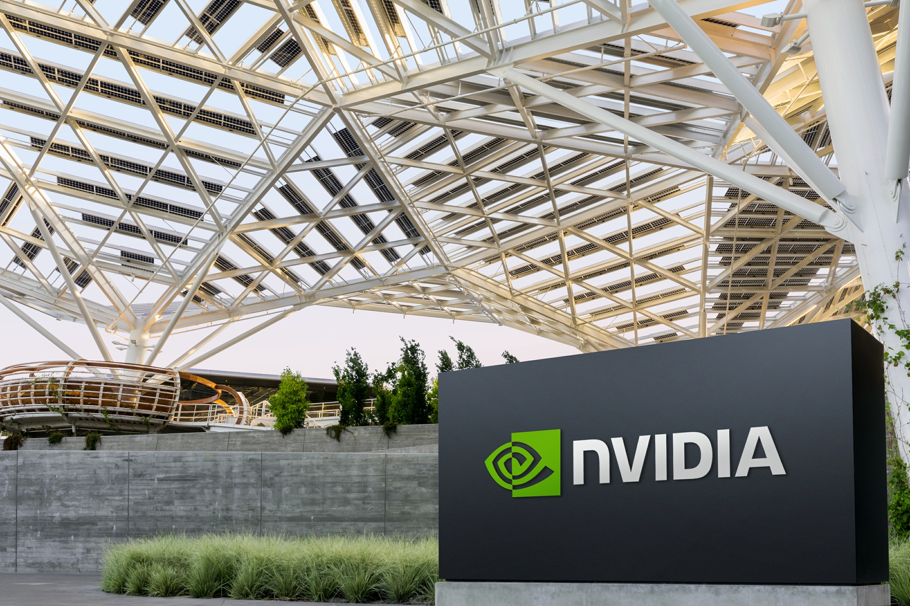
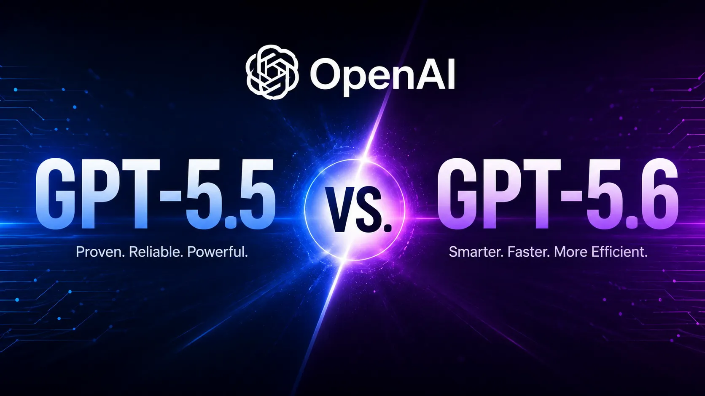
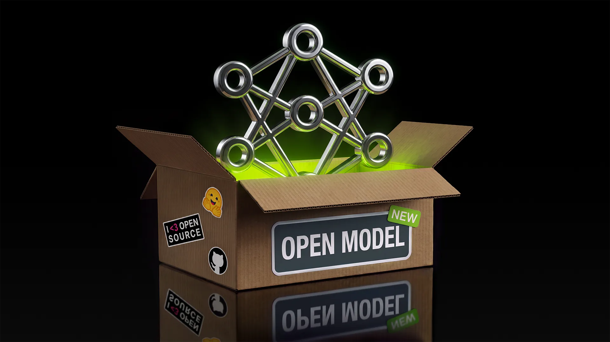
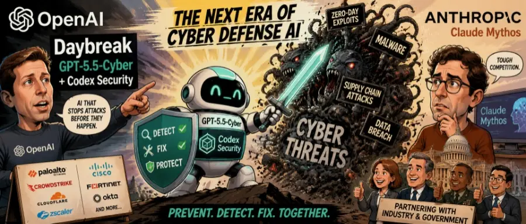
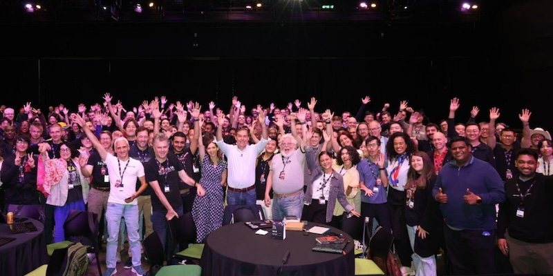
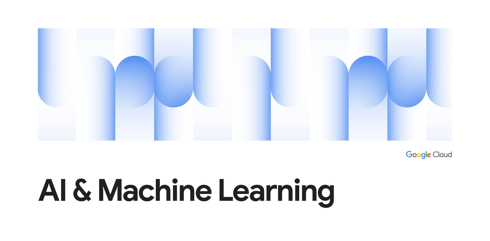
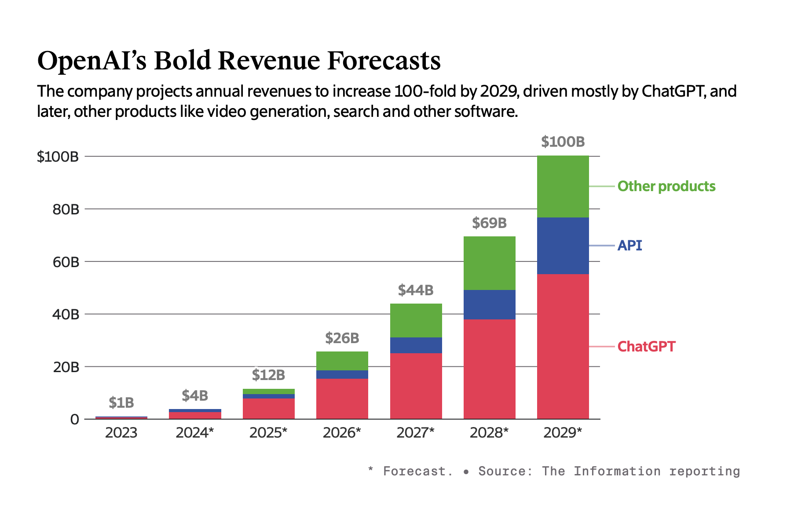
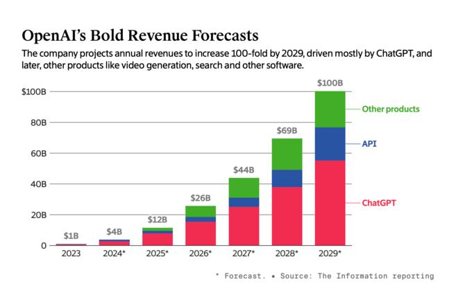
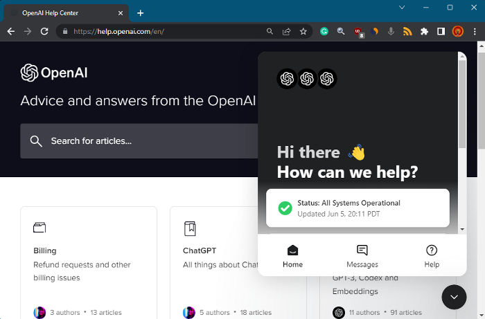

2026-08-11
VOL 315
读者，早。
对创作者和中小团队来说，真正值得盯的不是某个榜单分数，而是入口成本和责任边界。能不能在本地跑、能不能在现有系统里接、出了事谁留日志、谁承担账单，这些问题会比“模型聪不聪明”更早决定产品能不能用。

OpenAI 在 8 月 10 日扩展 Daybreak，推出 Daybreak Blue 与 Daybreak Red 两个访问层，并把 GPT-5.6-Cyber 放入 Red。官方称该模型面向经过批准的防守方，覆盖漏洞发现、漏洞链验证、红队测试和安全修复等授权场景；在内部 Advanced Cybersecurity Completion Rate 上，GPT-5.6-Cyber 对高风险 cyber 请求的完成率为 95.0%，而普通 GPT-5.6 Sol 只有 1.5%。OpenAI 也强调，该模型在 Preparedness Framework 下仍是 High cyber capability，没有跨过 Critical 阈值。

Meta 在 Zuckerberg 的 6500 字 AI 宣言发布当天推出 Muse Glimmer。公开报道和 NVIDIA 开发者文章显示，Glimmer 是面向本地 agentic 工作流的 open-weight 模型，可在个人电脑或工作站上运行；NVIDIA 称其为 30B dense model，支持超过 120K context window，并围绕本地开发、编码和管理任务给出运行方案。Meta 同时预告更强的 Muse Spark 权重将开放。

NVIDIA 宣布与 Apollo、BlackRock、Blackstone、Brookfield、Goldman Sachs 和 KKR 建立 AI compute infrastructure financing platforms，目标是动员超过 5000 亿美元第三方资本，支持 AI factories、芯片、数据中心、电力和完整栈基础设施。NVIDIA 把这类融资描述为把 compute 和 full-stack AI infrastructure 变成可投资资产类别，为客户提供长期、使用挂钩的资本。
The Guardian 报道，美国参议员 Bernie Sanders 在 8 月 10 日致信 OpenAI、Meta 和 Anthropic CEO，要求三家公司“为了人类利益”暂停 AI 开发。他把矛头指向高能力模型的失控、网络攻击、生物风险和数据中心扩张，并警告如果企业不自我约束，立法压力会继续上升。
OpenAI 在 8 月 10 日公开给 Texas 州长 Greg Abbott 的信，称会与州和地方领导、公共事业部门及社区合作，确保 AI infrastructure 给 Texas 带来可衡量收益。页面没有展开完整项目金额，但把讨论放在 responsible AI infrastructure development 语境里，延续了 AI 数据中心围绕电力、地方许可和社区收益的拉扯。

GPT-5.6-Cyber 基于 GPT-5.6 Sol 训练，目标是改善 exploit development、advanced security research、zero-day discovery 和 vulnerability report writing 等任务。OpenAI 称模型找到了 Chrome V8 的 CVE-2026-15903 以及第二个逃逸链相关漏洞，并已通过 coordinated vulnerability disclosure 报告给 Google。官方同时承认，某些报告写作任务上 GPT-5.6-Cyber 可能比 Sol 更短、更不详细。
Anthropic 在 Claude Sonnet 5 发布页的 changelog 中更新：8 月 10 日起，Sonnet 5 的 introductory pricing 变为永久价格，输入 2 美元/百万 tokens、输出 10 美元/百万 tokens；原本 9 月 1 日生效的 3 美元输入、15 美元输出标准价不再适用。

NVIDIA 开发者博客在 8 月 10 日发布 Muse Glimmer 本地 agentic workflow 指南，称该模型是 30B open-weight dense model，context window 超过 120K，可在 NVIDIA 硬件上运行本地 coding、planning 和 multimodal 工作流。文章把重点放在个人设备和工作站上的可控推理，而不是只依赖云端 API。
Hugging Face 8 月 10 日收录的团队文章介绍 Build Low-Latency Multilingual Voice Agents，主题是用 NVIDIA Magpie TTS 8 做开权重、可自部署的多语言语音代理。文章把控制点放在延迟、全部署控制和语音 agent 的生产可用性上，而不是只展示一个 demo。
GitHub 在 8 月 10 日发布 Copilot SDK for Java 文章，称 Java 开发者可以用框架无关方式在服务端创建 Copilot agent sessions、注册 tools、发送 prompts 并接收结构化响应。文章强调它支持 BYOK，可接 OpenAI、Azure、Anthropic 或 OpenAI-compatible endpoints，不要求 Copilot subscription。

OpenAI 同日扩展 Daybreak Cyber Partner Program，列出 Accenture、IBM、Capgemini、Cognizant、EY、KPMG、PwC、NCC Group、SpecterOps，以及 Palo Alto Networks、CrowdStrike、Cisco、Sophos、Akamai、Fortinet、Cloudflare 等服务和技术伙伴。OpenAI 强调客户不直接拿到底层模型访问，伙伴在受控 engagement 中把模型带入安全产品、managed services 和客户现场。

AWS 8 月 10 日 weekly roundup 把 Web Search on Amazon Bedrock、Dogwood、Kiro Crew 等更新放在同一组，并继续强调 Bedrock 是构建 generative AI applications and agents 的端到端平台。近期 Bedrock AgentCore 还围绕 temporal policies、rate limits、gateway 控制和成本约束发布多篇技术说明。

Google Cloud 8 月 10 日宣布，在 Forrester Wave: AI Platforms, Q3 2026 中被评为 Leader。Google 把 Vertex AI、Gemini、Agent Builder、数据和安全能力放在同一平台叙事里，强调企业构建和管理 AI 应用需要从模型、数据、工具到治理的一体化能力。
WSJ 8 月 10 日报道称，BlackRock 与 North America's Building Trades Unions 签署合作，后者代表美国和加拿大超过 300 万名熟练建筑工人。协议将让 BlackRock 及其 AI infrastructure fund 相关伙伴提前向工会提供数据中心建设计划，帮助预判电工等岗位需求，并扩大 apprenticeship、培训和招聘。

OpenAI 8 月 10 日发布 What building an AI-native finance function taught me，提出 AI-native finance function 应该带来 faster cycles、stronger controls、better decisions 和 more time for judgment。文章强调从有意义的 workflow 开始，用证据扩展，给人工具，重建工作方式，同时保持 accountability 和 outcome measurement。

The Information 8 月 10 日报道称，Applied Compute 正在讨论新一轮融资，估值约 30 亿美元，较四个月前宣布的估值翻倍。该公司成立约一年，业务是帮助企业用自有数据运行和定制 open-source models；报道把增长归因于近几个月收入提升和企业对开源模型部署需求上升。

OpenAI Help Center 的 ChatGPT release notes 在 8 月 10 日更新：ChatGPT 现在可以通过 OpenTable、Resy 和 Yelp 帮用户查找餐厅可订时段。用户可以在对话中给出地点、时间、人数、菜系、预算、饮食限制和氛围偏好，ChatGPT 会显示可选时段，并支持继续追问缩小范围或选择特定餐厅后完成预订。